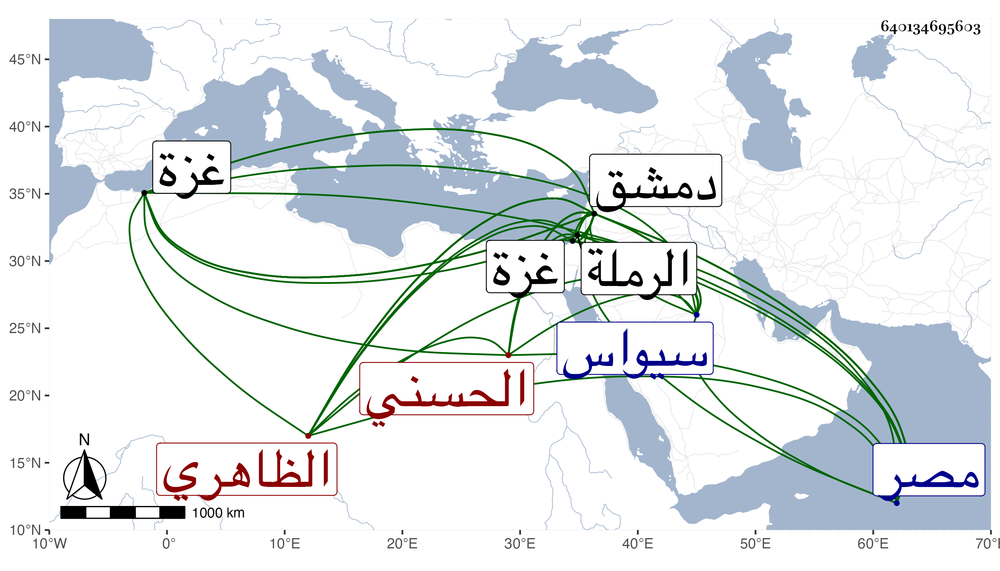

0902Sakhawi.DawLamic.ITO20230111-ara1.EIS1600.640134695603
Biography ID: 640134695603
183
تنم سيف الدين الحسني الظاهري برقوق . تنقل في خدمة أستاذه إلى أن ولاه نيابة دمشق بعد وفاة كمشبغا الخاصكي ، ثم في سنة سبع وتسعين قاد الجيوش الاسلامية إلى سيواس نجدة لصاحبها برهان الدين بأمر أستاذه الظاهر فلما مات أستاذه خرج عن طاعة المصريين وعزم على التوجه بمن وافقه من النواب والامراء إلى مصر ، واجتمعوا كلهم بدمشق ، ثم سار بهم في سنة اثنتين وثمانمائة ، فلما سمع المصريون خرجوا ومعهم الناصر فرج وهو صغير ، فلما وصلوا إلى غزة وبلغهم أن تنم ومن معه وصلوا إلى الرملة استعظموا أمره فراسلوه مع الصدر المناوي قاضي الشافعية وغيره في الصلح فلما دخلوا عليه أكرمهم وخلع عليهم وأنعم عليهم ومال إلى الصلح فأفسد عليه ذلك بعض الامراء فرجع الصدر ولم ينتظم الامر وتهيأ الفريقان للملتقى فانكسر تنم ومن معه من الامراء وأمسك هو وغالب من معه في الوقعة واستمر ركاب السلطان إلى دمشق وصعد قلعتها وبث النواب وقرر أمور دمشق وقواعدها وحبس تنم بها ثم توفي مقتولا بها في رجب أو شعبان سنة اثنتين وكان أميرا كريما كبيرا شجاعا مهيبا عادلا محترما ذا همة عالية ورأى وتدبير وخبرة وعرفان ، بنى خانا للسبيل بالقرب من القطيفة على بريد من دمشق وتربة بدمشق . ذكره ابن خطيب الناصرية وقال غيره قتل خنقا في أول رمضان ودفن بتربته بالقبيبات .
